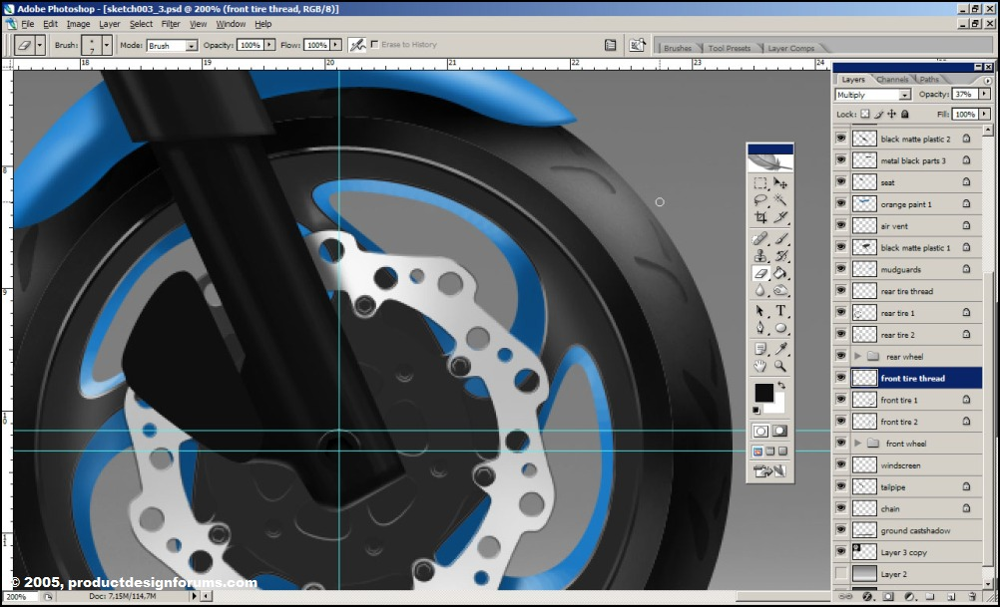

Apunte y recursos para unos multimedios
Ilustración digital de una Motocicleta desarrollado con Photoshop
En Construcción
Hola y bienvenidos a mi segundo tutorial. Tal vez sea extraño hacerlo, pero me gustaría comenzar con un consejo. Mi mente puede ser bastante caótica a veces, durante este tutorial ciertamente lo fue. Cometí una serie de errores tontos y se los mostraré en el curso del tutorial. Así que primero lea todo el tutorial... notará algunas cosas que cambiaría desde el principio si volviera a hacer esta imagen. Si no entiende bien lo que sucedió en un determinado paso del tutorial, siga leyendo, existe la posibilidad de que lo explique en un paso posterior para evitar tener demasiado texto con algunas imágenes.
Si está familiarizado con el campo del diseño conceptual, probablemente haya oído hablar de un tipo llamado Scott Robertson (sitio web drawthrough.com). Ha producido una excelente serie de tutoriales en DVD para The Gnomon Workshop, uno de los cuales muestra el proceso de creación de una bicicleta futurista. Mi tutorial usa las mismas técnicas, aunque quizás mi enfoque difiera aquí y allá. De todos modos, Scott me dio su permiso para publicar este tutorial, por lo que estoy agradecido.
Bien, pongamos esto en marcha. En la captura de pantalla de Photoshop a continuación, puede ver que comencé con un fondo y un boceto aproximado ampliado que preferí renderizar. Entre los bocetos realmente desordenados, probablemente verá algunas líneas más limpias que importé de Rhino(software para dibujo mecánico y modelado orgánico con NURMBS). Fueron rastreados desde la vista lateral de una motocicleta Yamaha R1. Los usé para asegurarme de que mis proporciones no estuvieran demasiado alejadas.
Coloqué el boceto que desea representar en una capa separada y configure la capa en Multiplicar y baje la opacidad de la capa para que sea lo suficientemente visible como para poder usarla para el seguimiento.
El fondo que ve es muy típico para fotografías de estudio de automóviles y otros vehículos. En los renders que hice a continuación, puedes ver el efecto que traté de lograr.Hacer este fondo es realmente fácil, podrías hacerlo todo con un degradado simple, simplemente usé algunos aerógrafos grandes y suaves de la paleta predeterminada de Photoshop. Trata de evitar usar la opacidad del 100%, si la bajas puedes lograr efectos mucho más suaves si haces un par de pasadas con el pincel (piensa que usas un pañuelo con polvo de tiza).

Puse una sombra simple aquí, hará una gran diferencia en unos pocos pasos más. Simplemente use un aerógrafo suave y pequeño para crear las sombras. Ahora probablemente modificaré la sombra más adelante cuando termine el renderizado de la bicicleta, pero por ahora es bueno tener una indicación de un objeto que se muestra en esta configuración de estudio. No querrás renderizar una bicicleta que parezca flotar sobre el suelo. Una sombra da un efecto inmediato de masa.
Observe la configuración básica de la capa:
Guía de bocetos: el boceto inicial + dibujo de proporciones de ; capa configurada para multiplicarse (para que se muestre sobre todos los objetos a continuación). Establecí la capa en una opacidad de aproximadamente 40%, lo suficiente para que siga siendo útil para arrojar algunas rutas de Photoshop más adelante.
Capa 2: todavía vacía, pero imagina en este lugar todas las capas necesarias para crear la representación de la bicicleta más adelante.
ground castshadow: Creo que este es bastante obvio. Sin embargo, no lo fusiones con el fondo, si quieres mover tu bicicleta más adelante, no tienes que crear un nuevo fondo y sombra si mantienes las cosas separadas.
fondo: la toma de fondo que creamos anteriormente.

ok, paso importante aquí, puedes optar por hacerlo más tarde, pero prefiero establecer algunas guías lo antes posible.
Active las reglas con Ctrl+R, haga clic en la regla izquierda y arrastre hasta que vea la guía en su imagen. Necesitará dos guías verticales, una para cada rueda. Ubícalos donde quieras tener el centro de cada rueda (posición del eje).
Ahora, desde la regla superior, haga clic/arrastre tres guías en su imagen. Coloque uno de ellos donde sus ruedas tocarán el suelo y los otros dos en los ejes de las ruedas. Dejé caer mi eje trasero un poco más alto que el delantero, quiero tener una rueda trasera más grande que la delantera.

Es hora de empezar con las cosas tediosas ;) Paths!!
Comencemos con las ruedas. Haga clic en la herramienta Elipse  (U) y antes de dibujar algunas elipses, asegúrese de que en la barra de opciones debajo de la barra de tareas este ícono esté presionado post-2-1124824643.jpg. Esto asegurará que las elipses que está a punto de hacer se hagan como caminos (path) y no como formas.
Dibuja una elipse con la tecla Shift presionada. Esto obligará a la elipse a convertirse en un círculo.
(U) y antes de dibujar algunas elipses, asegúrese de que en la barra de opciones debajo de la barra de tareas este ícono esté presionado post-2-1124824643.jpg. Esto asegurará que las elipses que está a punto de hacer se hagan como caminos (path) y no como formas.
Dibuja una elipse con la tecla Shift presionada. Esto obligará a la elipse a convertirse en un círculo.
Ahora su círculo es probablemente demasiado pequeño o demasiado grande y no está colocado donde lo desea. Resolveremos esto :) Primero tienes que asegurarte de que tienes el complemento activado (Shift+Ctrl+;). Presione la herramienta de selección de ruta post-2-1124824893.jpg, seleccione el círculo que acaba de hacer y arrástrelo a la intersección de sus guías. Con un poco de arrastre hacia la izquierda/derecha y hacia arriba/abajo, pronto verá su nueva ruta circular ajustada a las guías. Con la Herramienta de selección de ruta, ahora escalaremos su ruta para que caiga directamente sobre la guía que hizo para el piso. Elija Edición > Transformar ruta > Escala. Con las manijas alrededor de su ruta, ahora puede escalar su ruta. Asegúrate de mantener presionada la tecla Mayús para que no se estire de nuevo a una elipse :) Una vez más, puede ser necesario un poco de esfuerzo para que las manijas del cuadro de transformación se ajusten a su guía, pero con un poco de persistencia debería funcionar bien. Presiona Enter para aprobar tu escala y ese es un círculo hecho :)
Ahora necesitamos un par de estos círculos. Creé uno para el borde exterior de cada neumático, así como el borde interior donde comenzará la llanta. Se hizo un quinto círculo para la forma donde se articulará la suspensión de la rueda trasera.

Lo primero que probablemente notará aquí es que volteé la imagen horizontalmente. ¿Por qué? Bueno, prefiero dibujar motocicletas con la rueda delantera hacia la izquierda. La foto de referencia que usé mostraba el otro lado de la motocicleta, con la rueda delantera hacia la derecha. Así que mi boceto tenía partes en un lado que estarían en el otro lado en una motocicleta real (al menos, en motocicletas Yamaha en ese rango). Descubrí esto alrededor de este paso en el proceso... así que simplemente volteé mi imagen horizontalmente (observa que si volteas las capas individualmente, su orientación entre sí podría perderse, porque las capas se voltearon alrededor de sus propios puntos de pivote No tendrás este problema cuando voltees toda la imagen de una sola vez... lo que sería más rápido de todos modos, pero es bueno saberlo ;) ).
Ahora es el momento de hacer el resto de los caminos para nuestro renderizado. Las rutas son formas vectoriales que se almacenan dentro de su dibujo como objetos invisibles, lo que significa que cuando guarda su imagen como .jpg o algún otro formato que no sea .psd, no mostrará esas rutas en su imagen. Las rutas se pueden usar para todo tipo de cosas, pero en nuestra imagen las usaremos para crear líneas y selecciones muy suaves. Puedes crear tantos caminos como quieras y siempre puedes seleccionarlos o deseleccionarlos e incluso modificarlos.
Crearemos caminos para casi todas nuestras áreas coloreadas. Puede crear una ruta con la herramienta Pluma post-2-1128105031.jpg (P). Solo asegúrese de tener este botón Post-2-1128105334.jpg Paths seleccionado en su barra de herramientas o, de lo contrario, dibujará formas en lugar de rutas. Dibuja tus caminos alrededor del área que deseas colorear. Tal vez se esté preguntando '¿cómo puedo crear dos líneas exactamente iguales en los bordes de dos áreas? ¿Necesito trazar cuidadosamente todo el borde de cada área coloreada?'. Bueno, no se preocupe porque lo más probable es que pueda superponer los caminos en esas áreas, siempre que prestemos atención al orden de las capas. Esto significa que puede usar el borde de un área y hacer que el área vecina se superponga porque estará debajo de todos modos. Esto puede ser todo un rompecabezas, así que ten cuidado donde crees que puedes superponer caminos y donde será más difícil.
Cuando crea la ruta, un solo clic del mouse para cada nuevo punto de control creará una esquina afilada. Si hace clic y arrastra, creará un punto de control suave.

La herramienta de selección de rutas post-2-1128105774.jpg (A) se puede utilizar para seleccionar una ruta completa. Con la ruta seleccionada, puede transformar o escalar la ruta, pero no con la propia herramienta de selección de ruta (utilice el menú Editar en la barra de tareas de Photoshop).
Junto con la herramienta Pluma (P), la herramienta de selección directa post-2-1128106022.jpg (A) es la herramienta que usará mucho al crear las rutas. Esta herramienta se utiliza para controlar cada punto de control individual de cada ruta. Haga clic en una ruta con esta herramienta y probablemente verá que aparecen los puntos de control, así como 2 manijas. Con esta herramienta, haga clic en una parte de la ruta entre dos puntos de control y aparecerán los controladores de esos puntos que controlan esa parte de la ruta. Si hace clic en un punto de control, se mostrarán ambos tiradores de este punto de control. Esta herramienta se puede utilizar para modificar los tiradores de control de cada punto, así como la posición de cada punto. Entonces, esta es una herramienta muy poderosa que puede usar para crear realmente la forma que desea. Un buen enfoque para crear caminos es crear un camino de forma rápida y aproximada con la herramienta Pluma y luego, una vez que haya creado este camino, haga que encaje correctamente con esta herramienta de selección directa post-2-1128106022.jpg (A).
Aquí puede ver que hice los brazos de dirección usando una combinación de puntos de control nítidos (simplemente haciendo clic) y puntos de control suaves (haciendo clic y arrastrando). Ahora probablemente se encontrará con la situación en la que accidentalmente ha creado un punto suave donde desea una esquina afilada o viceversa. No hay problema, use la herramienta Convertir punto post-2-1128106715.jpg (presione y mantenga presionado el botón Pluma para encontrarlo) para cambiar el punto después de que haya terminado de crear su forma. Con esta herramienta, puede hacer clic en un punto para convertirlo en un punto de control nítido y hacer clic y arrastrar para volver a convertirlo en un punto de control uniforme. Lo último que quiero señalar en esta captura de pantalla es el cuadro de diálogo Rutas que se muestra. En algún momento durante la creación de todas sus rutas, es probable que deseleccione su 'Ruta de trabajo'. Esto ocultará rápidamente todas las rutas y lo más probable es que entre en pánico;) No se preocupe, simplemente puede volver a seleccionar la 'Ruta de trabajo' y todas sus rutas se mostrarán nuevamente. Desearía que Adobe simplemente usara una ocultación/ mostrar el botón como lo hacen con las Capas... esto sería mucho más consistente y menos confuso.

Bueno, parece que he creado todos los caminos que necesito ahora (lo más probable es que luego descubras que necesitas crear aún más... no hay problema, pero es tedioso, sí;)). Use la herramienta de selección de ruta post-2-1128106984.jpg (A) para seleccionar una ruta y asegúrese de haber creado una nueva capa para esta parte que está a punto de colorear. Haga clic con el botón derecho del mouse y elija 'Hacer selección...'. Deje los ajustes como están en el cuadro de diálogo emergente que se muestra a continuación y presione Aceptar. Verá que ahora tiene una selección que puede completar con el color de su elección. Repita este procedimiento con sus otras rutas e intente realizar un seguimiento del orden de las capas al mismo tiempo. Asegúrese de crear capas con los nombres correctos, porque probablemente terminará con más de 30 capas y no querrá pasar 10 minutos buscando la capa correcta. En esta captura de pantalla puedes ver que tengo 2 objetos negros superpuestos entre sí, a saber, el soporte para los pies y la forma circular detrás de él. Creé dos capas separadas para esto para que sea más fácil agregar puntos destacados más adelante... evite usar objetos en la misma capa tanto como sea posible si es muy perezoso y no le gustan los rompecabezas (reordenando capas todo el tiempo).
Antes de comenzar con el sombreado de cada superficie, lo que significa agregar las luces y las sombras centrales, tenemos una buena oportunidad de jugar con los colores de nuestra bicicleta. Asegúrese de elegir un color antes de comenzar con el sombreado. Por supuesto, puede modificar los colores cuando haya terminado (porque mantenemos nuestras capas separadas), pero le facilitará la vida si elige un color que no sea demasiado difícil de sombrear. Me gustó este amarillo, pero luego recordé que generalmente es un poco complicado hacer que las áreas de sombra en amarillo se vean bien y no sucias, así que cambié a algo más fácil.
A partir de este punto, estará sombreando principalmente, por lo que puede ocultar la capa de guía de boceto que tiene en la parte superior de su imagen. Seleccione la capa del área que desea sombrear (por ejemplo, el tanque de combustible) y asegúrese de tener activado "Bloquear píxeles transparentes" (es el ícono de tablero de ajedrez junto al texto "Bloquear:" en el cuadro de diálogo de capas). Esto te permitirá pintar todo lo que quieras sin preocuparte de pintar fuera de tu área coloreada. Debido a que bloqueó píxeles transparentes, no puede pintar en áreas vacías, lo que significa que solo puede pintar en áreas donde ya tiene color. Pinte el resaltado y la sombra principal de cada área en la misma capa en la que se encuentra el objeto. Si se equivoca, simplemente puede volver a pintar sobre el área con el color que solía ser y todo se restaurará. No use el borrador, simplemente llenará el área que borre con el color de fondo que haya configurado en su Caja de herramientas. Simplemente use sus aerógrafos para pintar hasta que esté satisfecho con el resultado. Recuerde, las partes de la bicicleta que están cerca de la parte superior tienen un brillo bastante fuerte en la parte superior, las partes de la bicicleta cerca del piso tienen un brillo más débil en la parte superior, pero probablemente también un brillo de la luz reflejada en el piso. No olvide agregar este efecto, agregará una gran cantidad de realismo a su imagen (puede verlo claramente en la parte de plástico debajo del área azul del tanque de combustible). Nuevamente, mirar imágenes de referencia de todo tipo de productos, bicicletas y automóviles en configuraciones de estudio le enseñará mucho sobre dónde puede encontrar luces (sin embargo, no confunda las luces con los reflejos) y las sombras. Tener buenas referencias hace la vida mucho más fácil.

Ahora, si me disculpan, voy a ser muy flojo aquí;) Hacer formas complejas como esta en un programa de dibujo vectorial como Illustrator (utilicé Rhino aquí porque es genial con la combinación de curvas y matrices) realmente puede hacer que la experimentación con formas sea mucho más fácil. Puede hacer estas formas en Photoshop, pero llevaría mucho tiempo y el resultado final solo es visible después de invertir bastante tiempo. En Rhino, solo era cuestión de cortar un círculo en tantas partes como necesitaba, dibujar algunas curvas para reemplazar esas partes y colocarlas en arreglos polares. También hice coincidir su curvatura y los uní para crear un solo objeto de curva fluida y agradable. Parecería que esto es mucho trabajo, pero cuando esté un poco familiarizado con Rhino, sabrá que esto es realmente fácil y solo unos minutos antes de que pueda tener un conjunto de versiones diferentes para jugar. Al final utilicé Rhino para crear el conjunto del freno de disco, las llantas de las ruedas y el perfil del neumático. Los verá en pasos posteriores de este tutorial.

N de E. se agregan recursos para agilizar el proceso en archivos de ilustrator.
Disco de freno delantero en formato ai
Disco de freno trasero en formato ai
Neumático en formato ai
Rin en formato ai
Reduzca la escala de las curvas importadas (mantenga presionada la tecla Mayús para crear una escala uniforme agradable) y ajústelas a los centros de las ruedas. Asegúrese de realizar un seguimiento del orden de las capas, o terminarán en el extremo equivocado de los brazos de dirección ;)
Notarás que estas curvas importadas tienen líneas negras bastante gruesas. Esto puede parecer malo, pero en realidad podemos convertirlo en una ventaja porque cuando activamos 'bloquear píxeles transparentes' podemos dibujar luces y sombras en estas curvas.
Antes de hacer esto, necesitamos colorear nuestras formas. Vaya a la capa donde están estas formas y use la varita mágica para seleccionar los interiores donde desea su color. Cree una nueva capa manteniendo su selección y rellénela con el color de su elección. Solo asegúrese de mantener cada color en una capa separada para que pueda hacer cambios fácilmente si no está satisfecho con el resultado.

Ahora vamos a intentar simular un aspecto de acero cepillado que normalmente se ve en discos de freno como este. Toda la pintura se realiza en la capa utilizada para colorear el disco frontal, por lo que no se utilizan capas separadas para los reflejos de las sombras. Este es un objeto simple para colorear, por lo que no es necesario hacer las cosas demasiado complejas.

Podría usar un filtro de ruido aquí y usar un desenfoque de movimiento radial, ya que en realidad este efecto de sombreado se usa para pequeños rasguños radiales, pero si soy honesto, no creo que sea un aspecto muy realista. El ruido radialmente borroso sería bueno para los mapas de relieve en el software 3D, pero no para Photoshop, porque estamos representando los aspectos destacados reales de esos rasguños, no los rasguños en sí. Son demasiado pequeños para aparecer en tomas como las que estamos tratando de imitar. Así que solo queda el efecto anisotrópico, que se logra fácilmente usando un aerógrafo suave y rayando el disco un par de veces. Intenta lograr un efecto agradable y sutil. Un buen efecto secundario de las superficies brillantes es que difuminan los reflejos. El reflejo de la horquilla delantera, por ejemplo, se hace fácilmente usando otro aerógrafo suave y repasando el área detrás de la horquilla. Una vez más, solo busque un efecto sutil, simplemente no haga que los bordes del reflejo sean demasiado nítidos. Tenga en cuenta que lo llamo reflejo, pero también puede llamarlo sombra. En realidad, sería una mezcla de ambos, por supuesto.

Para las ruedas (llantas) utilizaremos exactamente el mismo proceso. Importé las curvas de Rhino y creé un par de capas para las áreas negras y azules. Para ensamblajes complejos como las llantas y los frenos de disco, es aconsejable crear no solo nuevas capas, sino también un nuevo grupo de capas. A continuación, puede colocar todas las capas asociadas con cada ensamblaje en su propio grupo. Cuando selecciona un grupo de capas, puede escalar/mover todas las capas de ese grupo al mismo tiempo. ¡Muy conveniente! Ahora escalaremos el grupo que creé para esta rueda delantera y lo pondremos en su lugar usando la escala uniforme y el enfoque de ajuste que describí anteriormente.

Bien, ahora que tenemos estos paneles coloreados, debemos darles a los bordes algunos reflejos agradables. Dado que tenemos caminos para la mayoría de estas superficies, esto es realmente fácil. Seleccione la ruta de la superficie que desea editar con la Herramienta de selección de ruta (A) y haga clic en el botón 'Cargar ruta como una selección' en la parte inferior de la pantalla Rutas (puede elegir varias rutas si no se superponen o cualquier cosa, también podrías hacer un par de esos al mismo tiempo). Asegúrese de estar en la capa correcta (simplemente pinto los resaltes del panel en las capas de color, realmente no necesito una capa separada para los resaltes) y también asegúrese de que la capa todavía esté configurada en 'Bloquear píxeles transparentes' como nosotros no quiero pintar el resaltado fuera del área del panel. Ahora vamos a ajustar nuestra selección; Seleccione > Modificar > Contrato... Elegí hacer el contrato de selección por 2 píxeles. Ahora invierta su selección (Shift + Ctrl + i) y estamos listos para comenzar. Dado que solo podemos pintar entre el borde de selección y los bordes exteriores de nuestros paneles (debido al bloqueo de transparencia de píxeles), podemos elegir cualquier tamaño de pincel que queramos para pintar las luces. Solo asegúrese de que su pincel no sea demasiado grande para las áreas donde desea finalizar los reflejos, por ejemplo, cerca de las esquinas de su panel. Los paneles que están ubicados muy por encima del suelo vamos a dar un fuerte resalte en sus bordes superiores, los paneles que están ubicados justo por encima del suelo también vamos a dar resaltes en los bordes inferiores debido a la luz que rebota en el piso.
Aquí está el resultado de ese trabajo destacado que hicimos. Observe cómo el panel principal en esta captura de pantalla tiene un resaltado en su borde superior que parece detenerse repentinamente. La razón de esto es que hay partes encima de ese panel que evitan que atrape la luz allí. Un error estúpido que noté aquí es que me olvidé por completo de las sombras centrales de esta cosa. Sin ellos, la imagen se ve realmente artificial y plana. Nunca hagas los reflejos sin olvidarte de las sombras centrales.
Puedes ver una variedad de cosas en este primer plano. En primer lugar, el perfil del neumático. Nuevamente, esto se hizo con 2 curvas simples de Rhino (formas internas y externas) que arreglé polarmente e importé en Photoshop. La coloración de estos perfiles es bastante simple. Use la herramienta de varita mágica para seleccionar las partes internas de estas formas (asegúrese de estar en la capa de las curvas de su perfil que importó) y con un pequeño aerógrafo negro suelte las sombras y con uno blanco las luces. Habiendo seleccionado el interior de estas formas, te aseguras de no colorear fuera de las líneas;) Otra cosa que notará es que hay una gran diferencia en la oscuridad entre los brazos de dirección y las partes negras del conjunto del disco de freno. Corregí esto en las partes del disco de freno jugando con los controles deslizantes de brillo/contraste.

Now it is time to reflect on all our hard work so far.. we have finished the rendering for a large part. All our surfaces are coloured and all our details are in there. The only thing is that it we still need to add the reflections. All the body panels still look as if they're made from a dull plastic. We need to add a clear coat on top of it to make it shine! To keep things clear and non-confusing we'll create a new set of paths in the paths window as you can see in the image below. We'll use this new set to create our reflections.

As you can see I have skipped the part where I create the paths, we have covered that already. I created these reflections on areas that will be highly reflective, the black plastic bits won't need them. Create a new layer called Reflections and convert your reflection paths to a selection. Fill the selection with white.
las fotos de referencia cercanas ayudan a elegir un valor realista para esto. Elegí una opacidad del 34%, tenga cuidado de no hacer que los reflejos dominen toda la imagen y desvíen demasiado la atención del sutil sombreado que hemos creado debajo. Para terminar los reflejos borré ligeramente las esquinas y bordes de cada reflejo. Esto simula cajas de luz utilizadas en fotografía que tienen su principal intensidad de luz en el centro de la caja. Muy simple, use un aerógrafo grande con solo un poco de opacidad para que no borre todo el borde de una sola vez.

Lo que hice aquí (perdón por las imágenes del proceso que faltan) es básicamente repetir todo el proceso de hacer un boceto rápido, nuevas rutas, nuevas capas, rellenos de sombras planas, reflejos y reflejos. Dado que todos estos pasos ya son familiares, espero que no sea un gran problema si los omito.
Aquí está el resultado final... observe los espejos que faltan. Después de hacer el manubrio, se hizo evidente que los espejos estaban en una posición imposible. En lugar de reposicionarlos, los dejé fuera. La moto es un estudio de renderizado y no un ejercicio de diseño, además le faltan las luces, así que demandadme ;) Espero que hayas disfrutado el tutorial y tal vez hayas aprendido algo en el proceso... Sé que lo hice. Un último cambio que hice después de terminar esta pieza e ingresarla en mi folio es ajustar un poco más la sombra del suelo y el área del piso. Lo hice un poco más plano para que coincidiera un poco más con la 'posición de la cámara' de la vista lateral.
Si cree que necesita más ayuda para crear imágenes como esta, considere obtener el DVD de Scott. No hay nada como ver a alguien realizar todo el proceso frente a usted: sro06_portada.jpg Por supuesto, si tienes alguna duda, házmelo saber e intentaré responderla lo mejor posible.
fuente: renderizado de una moto con Photoshop